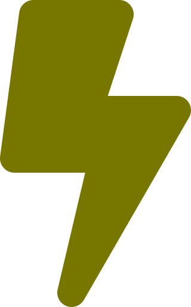
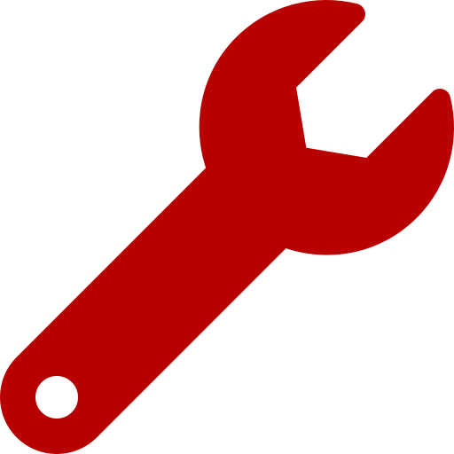
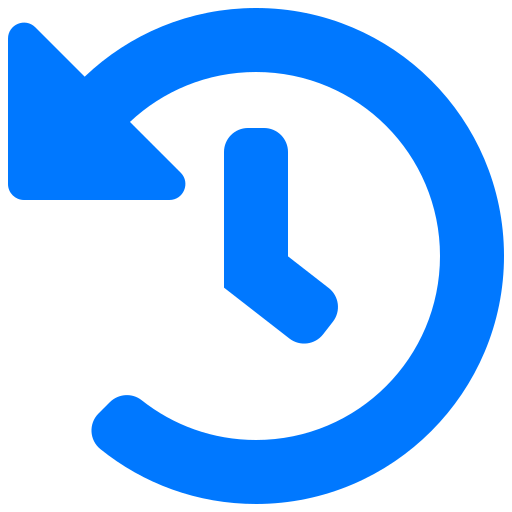

This is the money used to build or demolish.

This is the number of energy produced this turn.
One energy is equivalent to one coin made for the next turn.

This is the amount of upkeep for this turn.
One wrench is equivalent to one coin needed for maintainence.

This is the current turn.
The game ends after 30 turns.